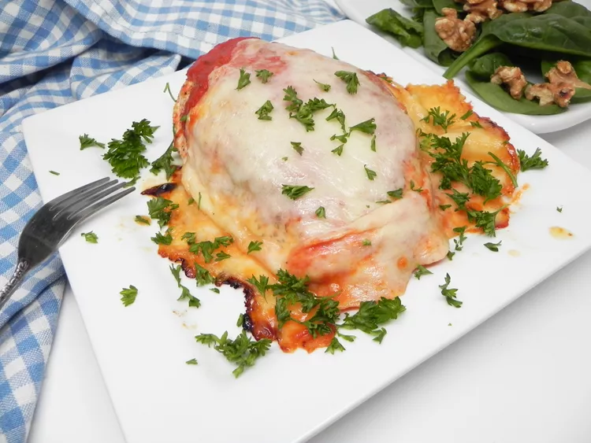

Chicken Parm with pasta

Description
Chickens are funny and tasty! But they shouldn't taste funny! BwAk BwAk BWAK HONK Oh no that's a goose
An easy chicken parm recipe that can be cooked in an oven or toaster oven.
And a stove top.
Also, the chicken is breaded and served with pasta even if it's not in the picture.
Ingredients
- chicken
- flour
- bread crumbs
- cheese
- tomato sauce
- pasta
- Preheat oven to 375 degrees F, and boil water for pasta on stove top
- Make sure the chicken is not living, and is meat, then roll it in flour and bread crumbs
- Throw the chicken in oven for 20 minutes.
- Throw pasta in boiling water for 10 minutes
- Cover the chicken in cheese, bake until melted and the chicken's temperature is 165 F
- heat up a jar of pasta sauce in a pot
- plate the pasta, sauce, then chicken.
- Put the plate into the microwave because something got cold
Return to home page